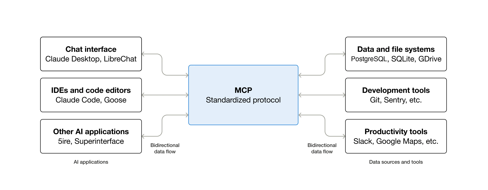
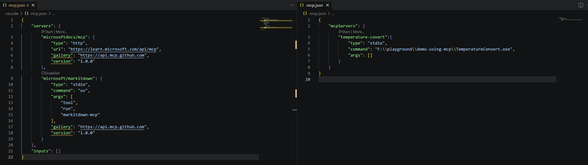
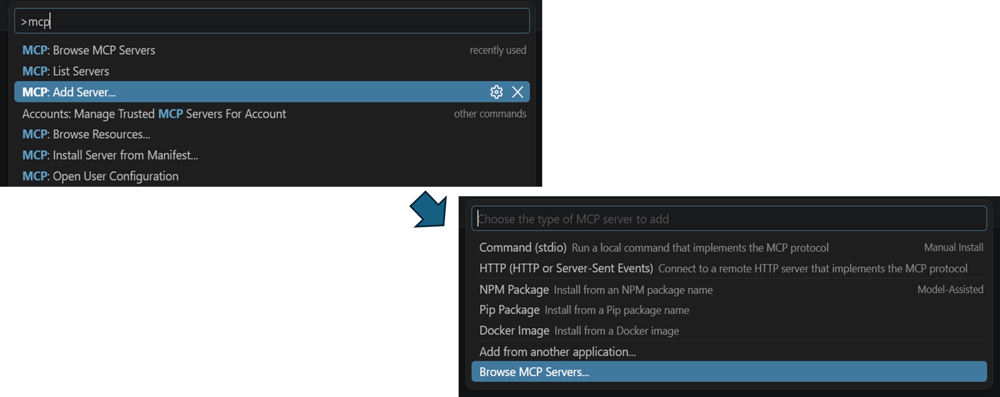
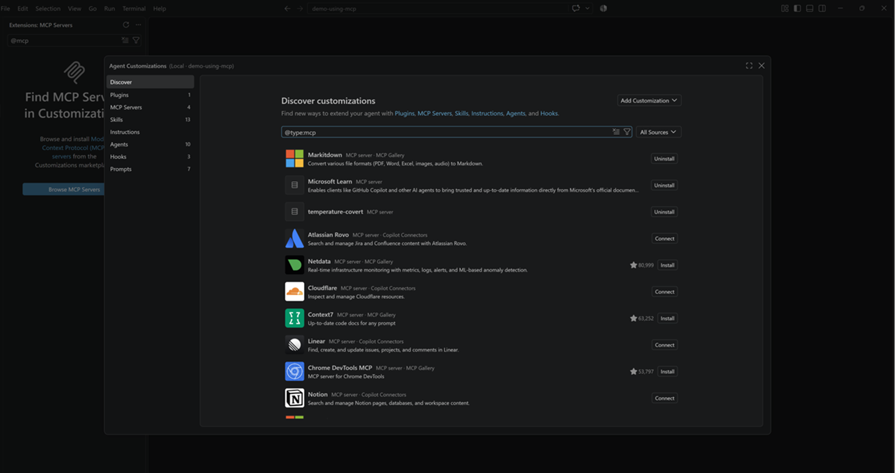
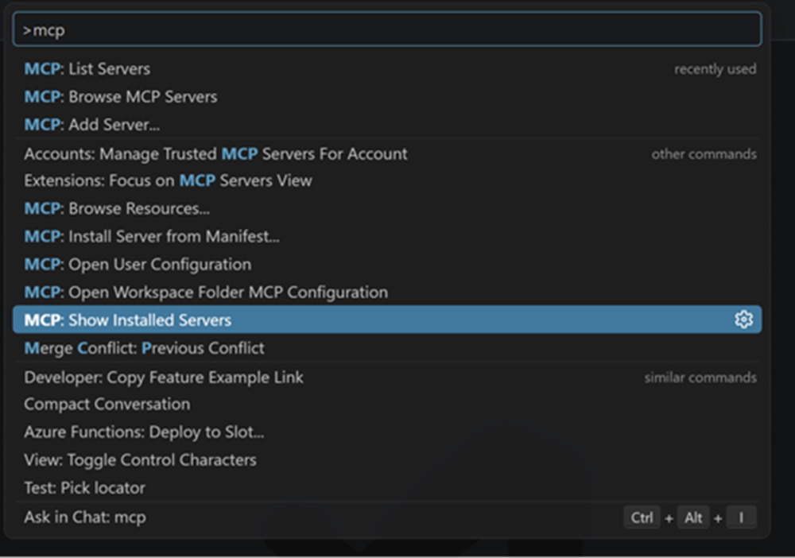
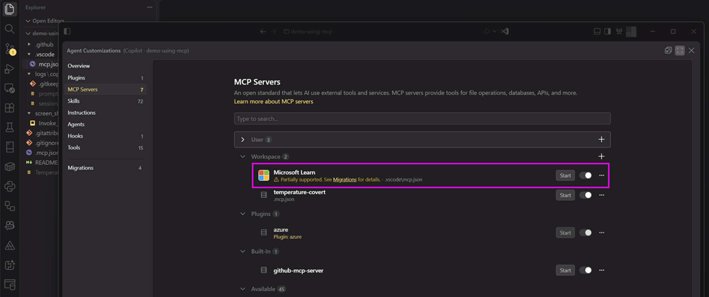
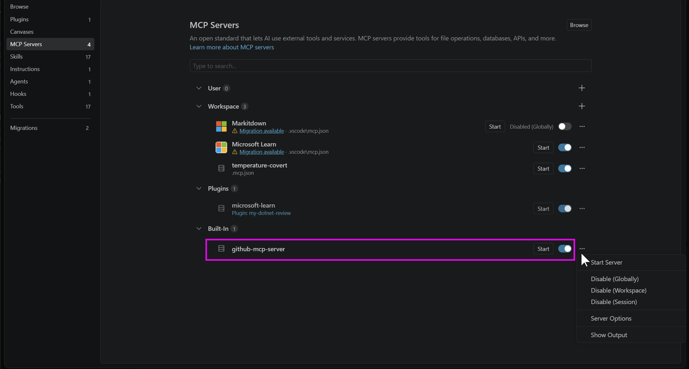

官方說明：
GitHub Copilot Customization features
| 名稱 | 可客製化 |
|---|---|
| Custom instructions | ✅ |
| Agent skills | ✅ |
| Tools | ❌ |
| MCP Server | ✅ |
| Hooks | ✅ |
| SubAgent | ❌ |
| Custom Agents | ✅ |
| Extensions | ✅ |
| Plugins | ✅ |
其中 Extensions 需撰寫 JavaScript 程式且只能安裝在 GitHub Copilot app & GitHub Copilot CLI，其他可客製化的透過撰寫相關Prompt或設定檔(markdown, json)進行，故在此不對 Tools, SubAgent, Extensions 進行說明。
https://docs.github.com/en/copilot/concepts/customizations/custom-instructions
自訂指令（Custom instructions）讓使用者能夠為 GitHub Copilot 提供具體的指導，以規範其運作行為。這可以包含對程式碼風格、命名慣例或其他專案特定需求的偏好設定。
GitHub Copilot Custom Instructions 可以分為專案全域與針對特定檔案類兩種：
專案全域作用：
.github/
└─ copilot-instructions.md
針對特定檔案類型：
.github/instructions/abcd/
└─ abcd.instructions.md
.github/instructions/defg/
└─ defg.instructions.md全域 Custom Instructions 可在 VSCode Chat View 的 GitHub Copilot 或 GitHub Copilot CLI 下 /init 指令建立。
https://docs.github.com/en/copilot/concepts/customizations/agent-skills
代理技能（Agent skills）允許使用者為 GitHub Copilot 定義特定的功能或行為。這些技能可以擴展 Copilot 的能力，使其能夠執行特定任務或與其他工具整合。
GH Copilot 將放在 .github/skills/ 或 .agent/skills/ 目錄下，每個 Skill 對應一個自命名子目錄，內含 SKILL.md 定義markdown檔案的目錄結構，視為一個 Agent skill。
.github/skills/
└─ my-skill/
├─ SKILL.md
└─ ...或在 .agent/skills/ 目錄下：
.agent/skills/
└─ my-skill/
├─ SKILL.md
└─ ...遵循 Agent skill 的公訂規範(https://agentskills.io/specification)即可使用
GH Copilot 使用 “slash command” (/skill名稱) 來明確指定LLM去讀哪個 Agent skill 來使用。
另有一個 /skills 指令，列出目前所有可用 Agent skills。
GH Copilot 在 IDE (Visual Studio, VSCode, Xcode, JetBrains IDE) 中還有支援一個舊版的『Prompt files』功能，但 建議將其移轉至 Agent skill。
https://docs.github.com/en/copilot/concepts/customizations/mcp
MCP Server 為 GitHub Copilot 提供擴展功能的伺服器端組件，使用者可以MCP Server 中定義自訂行為、整合外部服務，並與 Copilot 進行互動。
https://docs.github.com/en/copilot/concepts/customizations/hooks
Hooks 允許使用者在特定事件發生時，執行自訂的程式碼或行為。這使 GitHub Copilot 跑的代理能夠在不同的操作流程階段，觸發使用者定義的邏輯，實現更靈活的擴展。
https://docs.github.com/en/copilot/concepts/customizations/custom-agents
自訂代理（Custom Agents）允許使用者建立專屬的 GitHub Copilot 代理，以實現特定的功能或行為。這使得使用者能夠根據自身需求，擴展 Copilot 的能力。
切莫和公訂標準『AGENTS.md (https://agents.md/)』混淆，這是類似 Custom instructions ：
AGENTS.md and GitHub Copilot: How Copilot Reads It, What It Ignores, and How to Make It Work
https://docs.github.com/en/copilot/concepts/customizations/plugins
插件（Plugins）允許使用者為 GitHub Copilot 增加額外的功能或整合。透過撰寫插件，使用者可以擴展 Copilot 的能力，並與其他工具或服務進行互動。
Plugin 遵循『Agent Plugins(https://agent-plugins.org/)』這個公訂標準，所以一些 Claude Code Plugin 也可使用，但支援程度請見官方文件
COPILOT_HOME ，則會使用 $COPILOT_HOME/hooks 目錄| 事件名稱 | 說明 | 觸發時機 | 用途 |
|---|---|---|---|
sessionStart |
Agent Session啟動 | 於 Session 開始時 | 注入初始log記錄 |
userPromptSubmitted |
使用者送出 Prompt | 使用者提交 Prompt ，LLM回應前 | 記錄使用者輸入的 Prompt |
preToolUse |
Tool 執行前 | Agent 要呼叫任何Tool之前 | 審核或記錄將使用之Tool |
postToolUse |
成功的 Tool 執行後 | Tooling 回傳成功 | 格式化回傳結果 |
errorOccurred |
Tool 執行失敗或是有其他系統錯誤 | Tooling 回傳失敗、拋出錯誤訊息 | 記錄錯誤訊息，便於追蹤和偵錯 |
agentStop |
Agent 停止 | 主 Agent 完成task，準備輸出回應時 | 驗證最終結果 |
subagentStop |
子 Agent 停止 | 子 Agent 完成task (多Agent情境) |
彙整證最終結果 |
sessionEnd |
Session 結束 | 整個 Session 完全結束時 | 記錄整個 Session 的結果、清理資源 |
Caution
範例執行畫面：
原始範例來源：https://github.com/github/awesome-copilot/tree/main/hooks/session-logger

.vscode/mcp.json.mcp.json 
.mcp.json，或是設定 COPILOT_Home 環境變數指定位置的設定檔：https://code.visualstudio.com/docs/agent-customization/mcp-servers#_choose-a-configuration-destination

Tip
所有的 MCP Server 可由 MCP: Show Installed Servers 快捷命令來開啟設定介面
MS Learn MCP Server 可讓 Agent 查找 MS Learn 網站文章/範例程式碼
https://learn.microsoft.com/training/support/mcp
假如先前已經隨 VSCCode 早期版本內建而安裝過，在 Agent Customization 設定頁面會額外顯示可點選進行『Migrations』超連結： 
安裝完成之後應該會有如下的 json 設定：
在跟 AI 對話時如果有些問題 Agent 使用的LLM模型不懂，會嘗試使用 MS Learn MCP Server獲取資訊：
也可以撈取 Sample Code：
GitHub MCP Server 可對特定 GitHub repository做各種動作：
https://github.com/github/github-mcp-server
新版的 VSCode 直接內建 GitHub MCP Server，無需額外安裝: 
也可以直接手動改設定檔，使用 OAuth 進行認證：
https://github.com/github/github-mcp-server#install-in-vs-code
第一次使用時會提示並引導開啟網頁做OAuth登入
之後就可以直接使用，例如 git pull 再用VSCode開啟OpenClaw.NET 的 GitHub 專案後，直接問 AI 得知是否有哪些破壞性版本變更：
MarkItDown MCP Server: https://github.com/mcp/microsoft/markitdown
可用來擷取PDF/docx/xlsx檔案內容並轉換為Markdown格式內容，便於後續LLM AI使用
這是 stdio 模式的 MCP Server，建議設定前先安裝 uv 命令列之後，再由 uv 安裝 markitdown-mcp 全域命令列
範例執行畫面：
使用 MCP C# SDK 建立命令列程式然後設定為地端 MCP Server
在使用此 MCP Server 時，可能會碰到某些太簡單的換算情況，LLM AI會直接背答案回應
程式碼就是在 MCP endpoint方法內使用httpclient呼叫JSONPlaceholder網站的 REST API
MCP endpoint方法輸入參數也可使用 [Description] 這Attribute來增加metadata敘述，以便讓取用的LLM AI知道該參數用途/值範圍
在VSCode內要使用前，先將專案跑起來之後，加上 MCP 設定檔的設定
Tip
可以再自行加上該MCP Server可用的 MCP tool 名稱，省去LLM偵測的時間
在 VSCode 內執行起來會列出可呼叫的 MCP Tool Trigger 列表
除了直接設定 VSCode Coding Agent 串MCP Server之外，也可用不消耗token的方式驗證 MCP Server： MCP Inspector (https://github.com/modelcontextprotocol/inspector){target=“_blank”} 需安裝Node.js v22以上版本 POSTMan App (https://www.postman.com/downloads/){target=“_blank”}
以下示範使用 MCP Inspector 接 ASP.NET Core 的 MCP Server 使用命令列啟動網頁UI
啟動後會在瀏覽器中開啟 MCP Inspector 的網頁介面，並列出可呼叫的 MCP Tool 列表
添加自己的 MCP Server:
完成設定後，MCP Inspector 就可以呼叫你所添加的 MCP Server 了